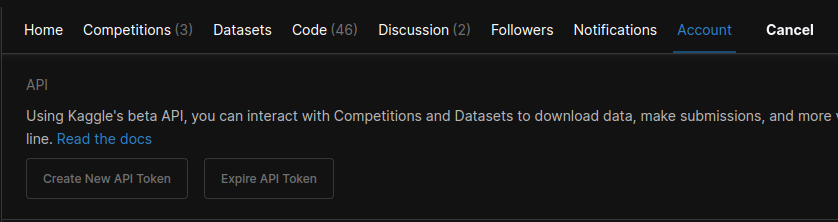
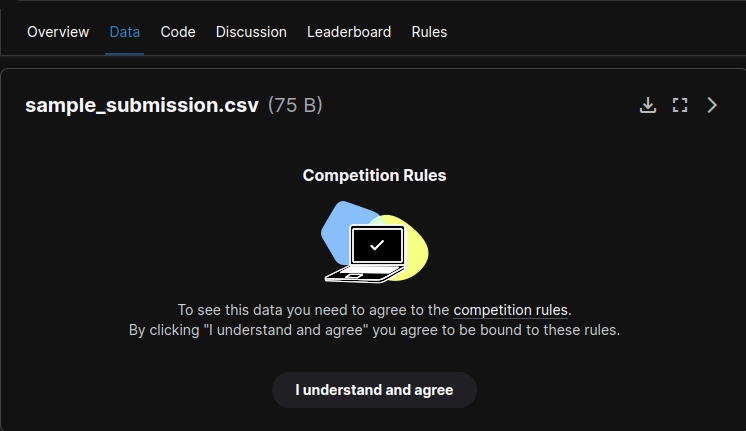
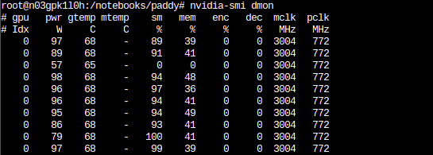

Live coding 7
Live coding 7
In this blog, I will cover how to setup kaggle on Paperspace.
Kaggle is a great place to practice hands on machine learning skills. There are many different competitions anybody can participate. And there are many different types of data available, such as medical images, satellite images, texts, and more. Some competitions are just for fun and learning, but there are also more practical competitions that can help ongoing research or improving products. It’s also a great place to discuss strategies with others.
Kaggle has notebooks available with GPUs like Colab, so it is possible to study machine learning on it. However, they do not have persistent storage. Also, Kaggle’s auto complete did not really work well for me. So, I would rather write notebooks on paperspace and submit it on Kaggle. Another good thing about using Paperspace is that Kaggle has GPU limits, but Paperspace doesn’t. So, let’s set up Kaggle on paperspace!
This blog is based on Live coding 7 Youtube video by Jeremy Howard, so you can watch the video as well.
Setting up Kaggle
First thing we want to do is install kaggle API. Install it by typing pip install --user kaggle. I set an alias for pip install --user to be piu, so I can type piu kaggle. If you haven’t setup an alias, you can open up /storage/.bash.local file and add one like this:

/storage/.bash.local fileI am also updating PATH environment variable to include ~/conda/bin and ~/.local/bin so that I can use packages I installed from mamba and pip, such as ctags and pip. There cannot be any space except one after export or alias.
After installing kaggle, we need ~/.kaggle/kaggle.json file with username and key in JSON format. You can get the key from kaggle website under profile options.

So, inside of ~/.kaggle/kaggle.json, you should have something like {"username":"<your_username>","key":"<your_key>"}. Make sure to put your username and key. Everything has to be inside of double quotes. Also, change the permission on this file by typing chmod 600 /storage/.kaggle/kaggle.json. Now, it is the same deal with other files in /storage/. We can just put this file inside of persistent storage and create a symlink. Then, add a line inside of /storage/pre-run.sh to create a symlink when the instance starts.
Make sure to change the permission of your kaggle API file with chmod 600. 600 here means only I can read and write this file.
There’s a good Kaggle competition called Paddy Doctor: Paddy disease classification. Even though it’s not active, we can still submit late submissions and compare our result with others. Before we can get the data, we have to agree to terms on the competition website. It should be under data looking like this:

After that, we can go to /notebooks/ and create a directory for paddy competition. Go in there and type kaggle competitions download -c paddy-disease-classification to download data. And unzip with unzip -q paddy-disease-classification.zip.
In bash, we can use time command to see how long it takes to do finish the command. For instance, when unzipping the file, we could do time unzip -q paddy-disease-classification.zip to check how long it takes to unzip.
That’s it. We have kaggle setup. This data is only 1GB, which is very small compared to other competitions, but if you want to work on other competitions with bigger data, you could download them and unzip them as the instance starts. Or you can upgrade storage.
GPU usage
When we are training with GPUs on Paperspace, we can type nvidia-smi dmon to check the usage. The main thing we care about here is sm column. This basically means how busy GPU is.

nvidia-smi dmonConclusion
Up to now, we’ve been going through live coding videos. In this video and following videos, Jeremy goes over different techniques using paddy data. Starting next blog, rather than following videos, I will create blogs based on notebooks.